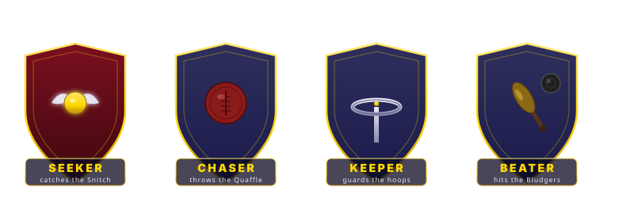
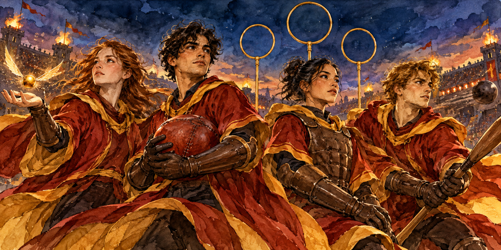
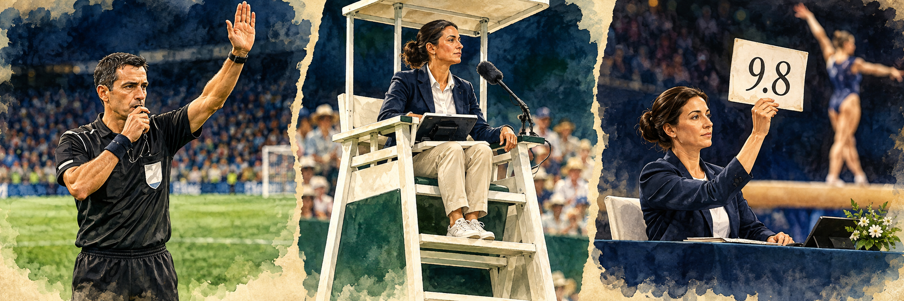
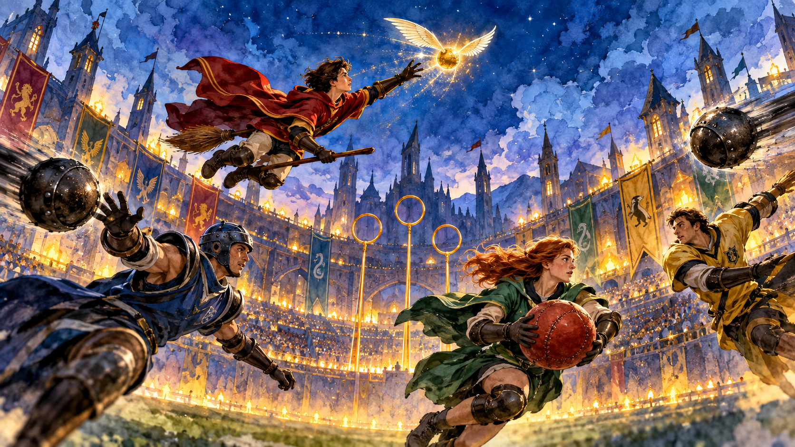
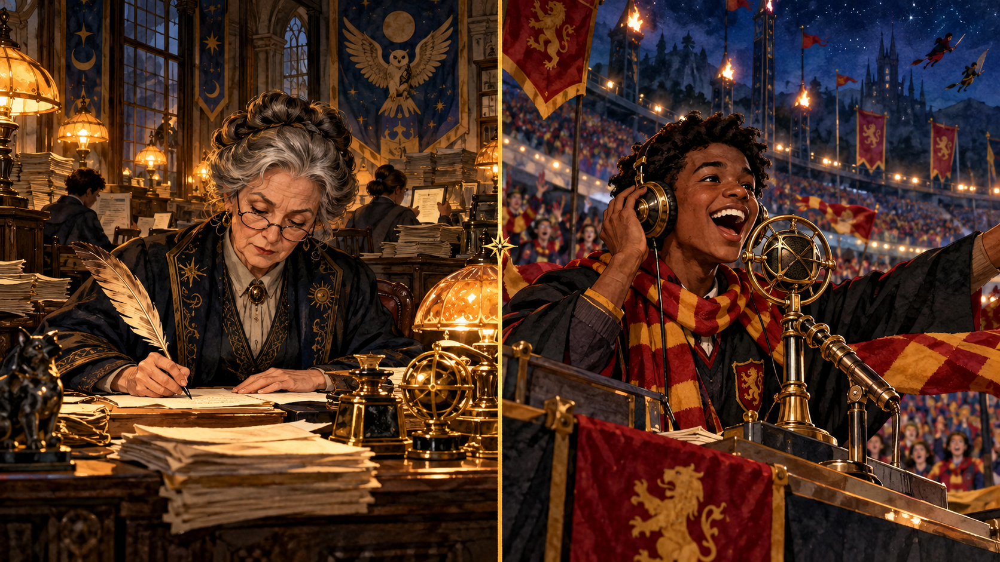
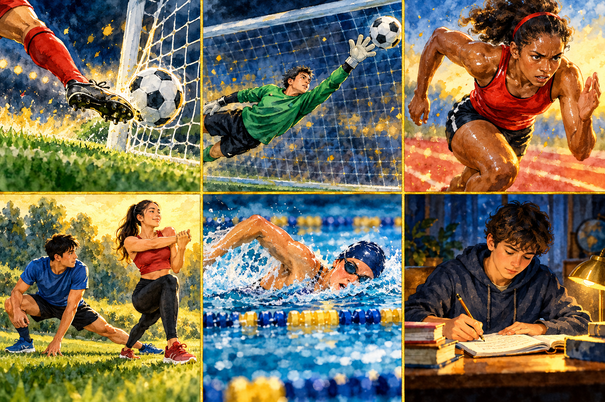
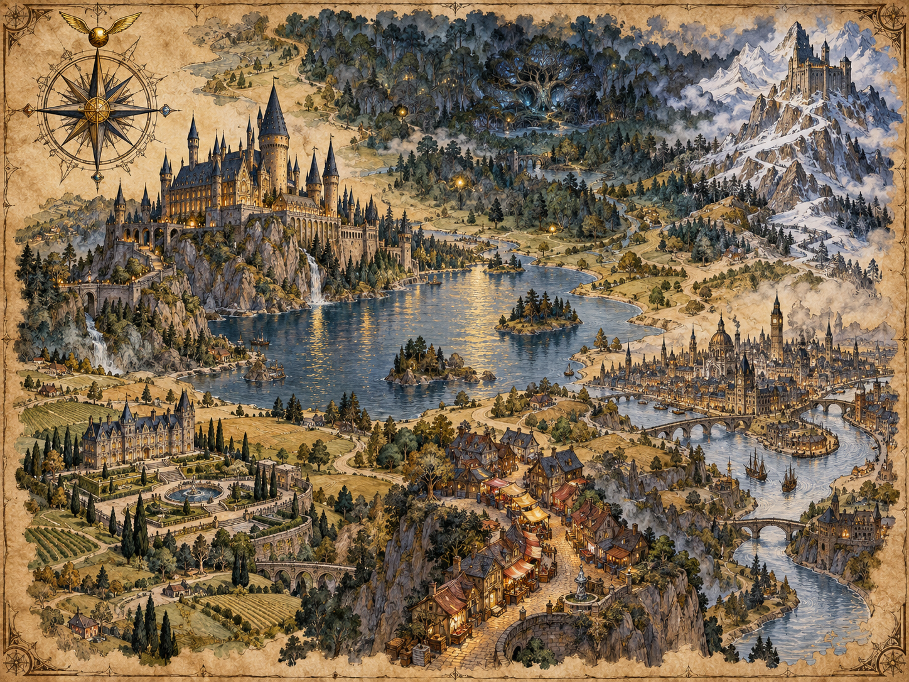
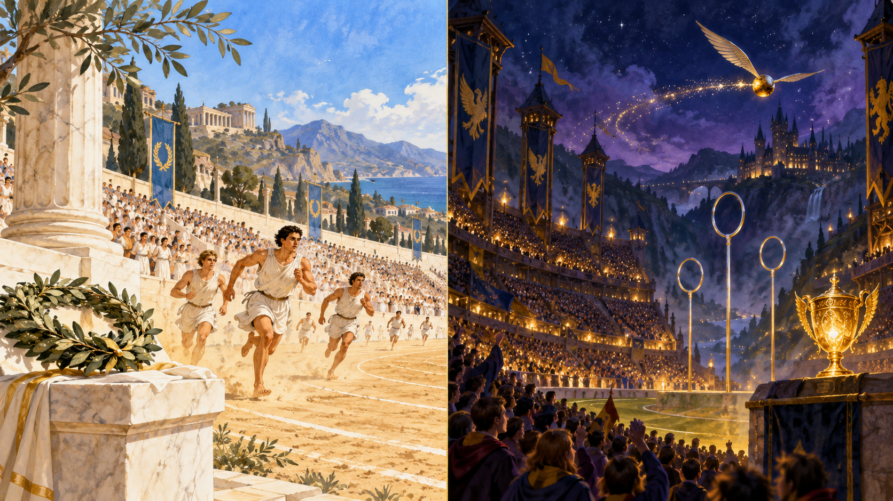
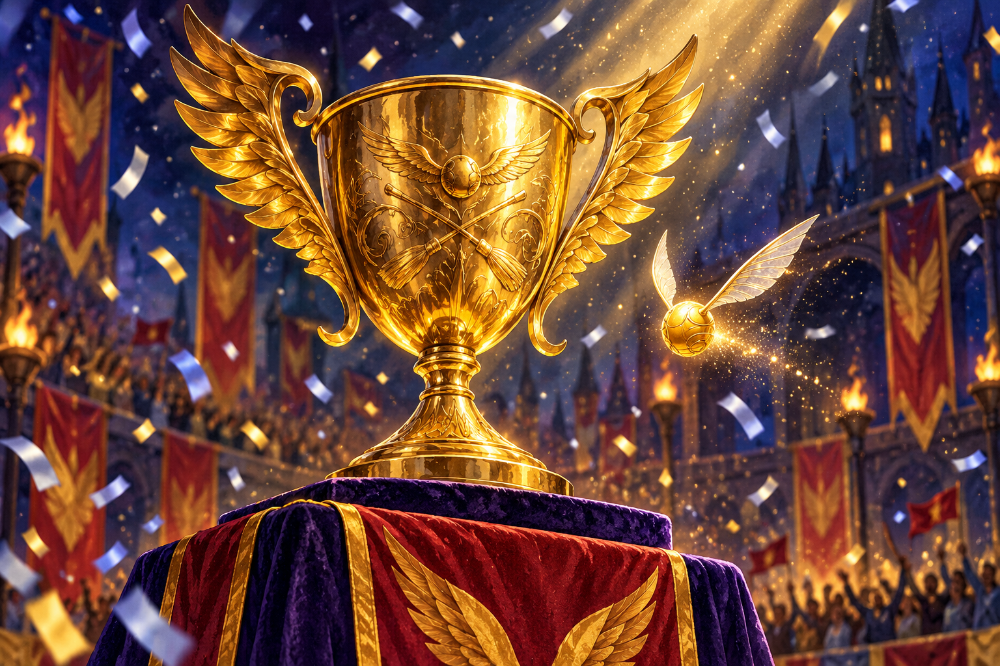

The Quidditch Championship. Four positions. One tiny golden Snitch.
Fourteen players. Four flying balls. Six goal-hoops. One golden Snitch worth 150 points. Today Katya learns the fastest, roughest, most confusing sport in the wizarding world — and, on the way, the grammar that carries it: if / unless for match predictions, if I were you… for hypothetical wishes, articles with places on the map, and the make-vs-do maze that every sports commentator lives in. Fasten your broom.
01
Meet the game · four positions, four balls
Fourteen players on brooms, four flying balls, six goal-hoops, one Snitch worth 150 points. Before we talk about rules, let's learn who does what.

The four positions
Seeker — one per team. Chases the Snitch. Match ends when the Snitch is caught (+150 points). Harry Potter is Gryffindor's Seeker.
Chaser — three per team. Throws the Quaffle through the hoops (+10 points per goal). Angelina Johnson is a Chaser.
Keeper — one per team. Guards the three hoops from the Chasers. Ron Weasley is Keeper in Book 5.
Beater — two per team. Hits the Bludgers away from teammates (with a wooden bat). Fred and George Weasley are the Beaters.
🏐 The Quaffle
Red leather ball, hand-sized.
Thrown by Chasers, caught by the Keeper.
Goal through a hoop = 10 points.
🎾 The Bludgers (×2)
Black iron balls, flying on their own.
Try to knock players off their brooms.
Beaters hit them away with wooden bats.
⚡ The Golden Snitch
Walnut-sized golden ball with silver wings.
Extremely fast, almost invisible.
Caught by a Seeker = +150 points, match ends.
🥅 The three hoops
Fifty feet up, at each end of the pitch.
Guarded by the Keeper.
A goal through any hoop = 10 points.
Ex 1 · Match the position to the job
Which position does each job?
Catches the golden Snitch to end the match →
Throws the red Quaffle through a hoop →
Guards the three hoops from the other team →
Uses a wooden bat to knock Bludgers away →
There are three of them on each team →
There is only one of them per team, and the whole match depends on them →
Ex 2 · Sport-vocab check (real world too)
Sport words that work in both worlds — football, tennis, Quidditch. Pick the right one.
The person in black who decides when there's a foul →
The player who wears the armband and leads the team →
The person who plans the training and shouts from the sidelines →
The person in the stands with a painted face and a flag →
The big yearly event where the winner takes home the trophy →
Ninety minutes of play (or one Snitch, whichever comes first) →

01·B
Sport lexicon · judge, referee, umpire
Three words that all translate as «судья» in Russian — but each belongs to a different set of sports. Get this trio right and half your sport-English is fixed.
Rule · which official for which sport
a referee — football, rugby, boxing, ice hockey, basketball, Quidditch. Blows a whistle, wears black, runs on the pitch. Madam Hooch is the Quidditch referee at Hogwarts.
an umpire — tennis, cricket, baseball, badminton. Usually SITS in a high chair or stands still. Watches, doesn't chase. The Wimbledon umpire calls «out» from a raised chair.
a judge — gymnastics, figure skating, boxing (scoring), diving, ballroom dance. Awards points from 0 to 10. Nine judges score every Olympic diving routine.
Rule of thumb: referee = active on the pitch · umpire = static observer · judge = grades performance.
Ex · pick the right official
One sport per line. Which official do you find there?
Football World Cup final →
Wimbledon tennis final →
Olympic figure skating →
A rugby match at Twickenham →
The Ashes (cricket, England vs Australia) →
A Quidditch match at Hogwarts →
Olympic gymnastics floor routine →
An Olympic diving competition →
Discussing the topic · sport vocabulary bank
Twenty-eight words grouped by function. Read the group headings first, then scan each list.
👥 People on the pitch
a player · an athlete · a coach
a captain · a substitute
a referee · an umpire · a judge
a spectator · a fan · a supporter
🏟 Places you play in
a pitch (football, rugby, Quidditch)
a court (tennis, basketball, volleyball)
a ring (boxing, wrestling)
a pool · a rink (ice) · a track (running)
a stadium · a gym
🏆 Events & results
a match · a game · a tournament
a championship · a cup · a final
a trophy · a medal · a title
to win · to lose · to draw · to defeat
⚽ Kit & action
a ball · a racket · a bat · a helmet
to score a goal / a point
to make a save · to make a pass
to train · to compete · to foul
Ex · what category does this word belong to?
Match each word to one of: people, place, event, action.
a spectator →
the final →
to draw (2:2) →
a rink →
a coach →
to defeat →
a tournament →
a gym →
an athlete →
a medal →

01·D
Ice hockey · sticks, pucks & the coldest pitch
Russia's national winter sport. If you can talk about football, you're 80% of the way to talking about hockey — but eight words are hockey-only. Here they are.
Hockey-only vocabulary
an ice rink — the playing area (a big rectangle of ice with rounded corners). The training rink opens at 6 am on Sundays.
a hockey stick — the long L-shaped stick used to push and shoot the puck. Every player brings two sticks to a match — one always breaks.
a puck — the small flat black disc that replaces a ball. The puck is made of hard rubber and weighs about 170 grams.
(ice) skates — special boots with a blade for gliding on ice. She got her first pair of skates at seven.
a helmet — head protection, obligatory in every real match. No helmet, no game — the referee will send you off.
a face-off — the moment the referee drops the puck between two opposing players to start play. The final face-off decides who touches the puck first.
a penalty box — the small bench where a player sits when they've broken a rule. He spent four minutes in the penalty box for high-sticking.
a slap shot — a powerful shot where the stick swings back before hitting the puck. His slap shot goes at over 150 km/h.
Ex · pick the hockey word
Ten hockey moments, one exact word each.
The training place — a rectangle of frozen water →
The small black rubber disc you shoot →
The long L-shaped tool you use to hit the puck →
The boots with a blade underneath →
The obligatory head protection →
The referee drops the puck and two players fight for it →
The small side-bench for a player who broke a rule →
A very powerful long-swing shot at the puck →
The Russian national team plays in a huge one at the World Championship — a covered building for the whole game →
The person who blows the whistle at a hockey match →
Bonus · Russian ice hockey trivia
The Soviet Union / Russian national ice hockey team has won the World Championship more than twenty-seven times — more than any other country in the sport's history. Ice hockey has been an Olympic sport since 1920. In 2019 one Russian slap shot was clocked at over 170 km/h during a KHL match.
Fun word: a hat-trick = three goals scored by one player in a single match. Started in cricket, adopted by football and hockey. Fans throw hats onto the ice when it happens.

02
Rules with if & unless
Two little words that describe the same match — from opposite directions. If Gryffindor scores, they win. = Unless Gryffindor doesn't score, they win. Same result. Different mirror.
Rule
if + present tense → future — a positive condition. If Harry catches the Snitch, Gryffindor wins.
unless = if not. Same idea, but the verb switches to the positive. Unless Harry catches the Snitch, Gryffindor loses.
Both sentences describe the SAME reality. Unless is just a shorter way to say if not.
Trap · never both together
Unless hedoesn't come, I'll call you. ✗ — «unless» уже несёт «if not», ещё одно «not» = двойное отрицание, смысл ломается.
Unless hecomes, I'll call you. ✓
Ex · pick if or unless
Each sentence keeps the verb form on the right. Pick the connector that makes it grammatically clean and true.
Gryffindor scores three more goals, they take the Cup.
Ron saves this shot, Slytherin scores again.
Harry sees the Snitch first, the match ends in two minutes.
the rain stops soon, they'll cancel the training.
the Beaters miss one Bludger, Angelina is in trouble.
Madam Hooch blows the whistle, the players don't stop.
Slytherin plays clean, this match will be fun to watch.
Umbridge changes the rules, Harry can still play next week.
Ex · rewrite from if not to unless
Say each new version out loud before you open the model.
«If the Seeker doesn't catch the Snitch, the match continues.»
Show unless-version
Unless the Seeker catches the Snitch, the match continues.
«If Fred doesn't hit the Bludger away, George gets hurt.»
Show unless-version
Unless Fred hits the Bludger away, George gets hurt.
«If we don't practise tonight, we'll lose on Saturday.»
Show unless-version
Unless we practise tonight, we'll lose on Saturday.
«If Angelina doesn't score in the next minute, we're finished.»
Show unless-version
Unless Angelina scores in the next minute, we're finished.

03
Lee Jordan on the mic · formal vs informal
The referee's voice is one thing. Lee Jordan's is another. Same event, two registers — and that's how a match sounds on the wireless.
Two voices
Formal — official announcements, referee talk, the school Prophet. Full grammar, no slang. Madam Hooch has just blown the whistle. Slytherin have been penalised for a foul.
Informal — Lee Jordan, McGonagall shouting in the stands, Ron in the common room. Short forms, slang, drama. Hooch is blowing the whistle! Slytherin get a foul — nasty one, that!
Same event. Formal → present perfect + full verbs. Informal → present continuous / simple + short forms.
Ex · same moment, two voices
Four match moments. Press ▶ to hear both versions. Then close, and repeat each version out loud — feel which one is which.
Moment 1 · a goal for Gryffindor
«Gryffindor have scored. The current score is 40 to 20 in favour of Gryffindor.»
«AND SHE SCORES! Angelina Johnson puts one through the middle hoop! Forty-twenty Gryffindor!»
Moment 2 · a Bludger hits a player
«A Bludger has struck the Slytherin Chaser. Play is briefly suspended.»
«OH THAT'S GOT TO HURT! Bludger straight in the ribs — he's down, folks, he is DOWN!»
Moment 3 · the Snitch appears
«The Golden Snitch has been sighted near the Gryffindor end of the pitch.»
«THERE IT IS! Snitch on the left! Harry's on it! Come on Potter, come on come on come on!»
Moment 4 · match ends
«The Snitch has been caught. The final score is 210 to 40 in favour of Gryffindor.»
«HE'S GOT IT! Potter's got the Snitch! Gryffindor win! Two hundred and ten to forty!»
Ex · label the register
Read the line. Is it Lee Jordan (informal) or the official Prophet report (formal)?
«Slytherin have been awarded a penalty shot.» →
«He's flying like a maniac — someone stop him!» →
«Play resumes at exactly 15:22 GMT.» →
«Come on Ron, one save, mate, ONE!» →
«The captain of Slytherin has left the pitch for medical attention.» →
«Yeah, don't even ask what she's doing on that broom.» →

04
Make vs Do · the sport-collocation maze
These two verbs mix up more players' English than the Bludgers do. The trick: make = you produce something new (a goal, a mistake, an effort). do = you perform an activity (sport, exercise, training).
Rule of thumb
DO — activity, work, sport, general effort. I do sport. Ron does his homework. We did our warm-up.
MAKE — create, produce, build, cause. Angelina made a goal. He made a save. Fred made a mistake.
DO — activity
do sport / exercise / a warm-up
do your homework / your job
do the training / the housework
MAKE — produce
make a goal / a save / a pass
make an effort / a mistake / a choice
make a decision / a plan / a call
Ex · make or do?
Pick the right verb for each sport moment. Say the full sentence aloud.
Ron
an incredible save with his fingertips.
Angelina
three goals in the first quarter.
The team
a twenty-minute warm-up before the match.
Katya
sport three times a week — swimming and jogging.
Fred
a huge mistake and dropped his bat.
Every serious player has to
stretching exercises before flying.
Harry
the decision to keep playing even after the fall.
You'll never be a Chaser if you don't
an effort at every training.
McGonagall
a plan for the whole season on a napkin.
My grandmother
the housework every Saturday morning.
Trap · housework ≠ homework
housework = domestic chores (cleaning, dishes, laundry). Molly Weasley does the housework at The Burrow.
homework = school assignments. Hermione does her homework the day she gets it.
Both take do. The difference is only in the noun.
04·B
Formal English extras · whom or who, any or either
Two small distinctions that separate everyday speech from exam-clean English. Modern spoken English is forgiving; formal writing is not.
Rule · whom vs who
who = subject of the verb (does the action). Who scored that goal?
whom = object of the verb OR object of a preposition. Whom did you invite? · To whom did you speak?
In modern speech people say Who did you speak to? and it's fine. In exams and formal writing whom is the safer choice — Afanasyeva grades will mark it.
He is the boy who caught the Snitch. (who = subject of caught) He is the boy whom Umbridge banned. (whom = object of banned) The captain to whom we spoke was Angelina. (whom after preposition)
Ex · who or whom (formal)
Pick the exam-clean form for each sentence.
won the Quidditch Cup last year?
did the referee send off first?
The Chaser
scored three goals was Angelina.
The Slytherin captain
McGonagall banned last year has returned.
To
did you give the training schedule?
The commentator with
I sat in the stand was Lee Jordan.
Rule · any vs either
any = one out of MANY (three or more, or an unspecified group). Take any book from the shelf (there are twenty books).
either = one out of TWO options. Take either book — the red one or the blue one (only two).
The trap: after either… or… the verb agrees with the SECOND subject. Either the Chasers or the Seeker is going to score.
Ex · any or either
Count the options. Two = either. More = any.
Which hoop do you want to guard? — I don't care,
of the three is fine.
Fred or George? —
of them can play tonight; they're identical.
You can bring
seven players from the reserve list — coach's choice.
I'll take
seat — the aisle or the window.
You can borrow
broom from the school cupboard — there are about a dozen.
The Weasley twins? I'll swap
of them for a better Beater.
04·C
Sport phrasal verbs · six that every commentator uses
Six two-word verbs that live in the sport pages of every newspaper. Learn the meaning + one real example each, then drill them.
The six · verb + particle + Russian meaning + example
1 · to warm up — размяться, разогреться перед матчем. The players warm up for twenty minutes before every match.
2 · to work out — тренироваться (обычно в зале), качаться. She works out at the gym four times a week.
3 · to give up — сдаться, бросить (спорт / попытку). Never give up in the third set — many players come back from 0:2.
4 · to send (someone) off — удалить с поля (за нарушение). The referee sent the defender off in the 63rd minute.
5 · to kick off — начать матч; в шире — начать что-то. The final kicks off at 8 pm local time.
6 · to catch up (with) — догнать (по счёту, по форме). By the end of the second half our team caught up — 3:3 at the whistle.
Verb + particle
warm up · work out · give up
send off · kick off · catch up
Splitting rule
send OFF the player ✓ · send the player OFF ✓
send OFF him ✗ · send HIM off ✓
Pronoun (him/her/it/them) ALWAYS between verb and particle.
Traps · false friends
give up ≠ подарить (это give away)
catch up ≠ поймать (это catch)
kick off ≠ выгнать пинком (это kick out)
Bonus form · noun
a warm-up — разминка (сущ., с дефисом)
a workout — тренировка (сущ., одно слово)
a kick-off — начало матча
Ex · pick the right phrasal verb
Ten real sport moments. Choose the phrasal that fits.
The referee showed a red card and
the Slytherin captain in the 40th minute.
The match
at 20:00 Moscow time.
The tennis players always
for twenty minutes before a match.
We were losing 0:3 at half-time, but we
by the 80th minute — final score 3:3.
Even after the injury she didn't
— she trained for another six months and won her medal.
He
at the school gym every Monday and Thursday.
The hockey coach
the goalkeeper separately for ten extra minutes.
The player who fouled Ronaldo was
after only twelve minutes on the pitch.
The Champions League final
exactly at 21:00 in Istanbul.
Serena Williams never
on a match, even when she was down two sets.
Ex · noun or verb?
The same words can be nouns or verbs — the writing changes. Pick the correct form.
Every morning I do a twenty-minute
before school.
I usually
for an hour at the gym on Sundays.
The
was delayed by half an hour because of rain.
The match will
at eight sharp.
The team's
looked professional and focused.
Please
properly before you touch the barbell.
Ex · translate into English (say aloud, then check)
Six mini-scenes. Use one of the six phrasal verbs in each. Open the model to compare.
«Судья удалил его с поля.»
Show model
The referee sent him off. (pronoun goes between verb and particle)
«Матч начался в восемь вечера.»
Show model
The match kicked off at eight in the evening.
«Не сдавайся — ещё один сет!»
Show model
Don't give up — one more set!
«Я разминаюсь по десять минут перед каждой тренировкой.»
Show model
I warm up for ten minutes before every training session.
«Она догнала лидера гонки на последних 100 метрах.»
Show model
She caught up with the race-leader in the last hundred metres.
«Мой брат тренируется в спортзале три раза в неделю.»
Show model
My brother works out at the gym three times a week.

05
Articles with places · Hogwarts vs the Alps
Some places take the. Others take nothing. Here's the pattern for every stadium, mountain, river and country you'll ever talk about.
Rule · use THE with:
🌊 Oceans, seas, rivers, canals — the Atlantic, the Thames, the Suez Canal
🏔 Mountain chains & groups of islands — the Alps, the Rockies, the Canary Islands
🏛 Hotels, theatres, cinemas, museums, most restaurants — the Ritz, the Odeon, the British Museum
🏳 Multi-word countries + country + states — the USA, the UK, the Netherlands
🚇 Public transport words — the underground, the tube, the metro
🏞 Lakes WITHOUT the word «lake» — the Baikal (BUT: Lake Baikal, no article)
NO article with:
🌍 Continents — Africa, Europe, Asia
🏳 Most countries, cities, streets, parks — Russia, London, Diagon Alley, Hyde Park
⛰ Single mountain peaks — Mount Everest, Mount Fuji
🏫 Schools with a proper name — Hogwarts, Beauxbatons, Durmstrang
🏞 Lakes WITH the word «lake» — Lake Baikal, Lake Windermere
Ex · Hogwarts geography tour
Fill each gap with the or leave it empty (∅ = no article).
Hogwarts sits on a cliff above
Great Lake.
Diagon Alley is a hidden street behind
Leaky Cauldron pub.
The Quidditch World Cup was hosted in
UK last year.
Fleur Delacour came from
Beauxbatons in
France.
Durmstrang is somewhere in
Scandinavia, high up in
mountains.
To get to the Ministry, Harry took
underground.
The Weasleys once took a Muggle plane over
Atlantic to visit Charlie in
Romania.
Harry visited
British Museum on a school trip in Book 5.
06
If I were Harry Potter… · Subjunctive Mood
The subjunctive is for things that aren't real — wishes, hypotheticals, «what if». English uses a past-tense-looking form for present unreal ideas. And were is the same for every person: I / you / he / she / we / they.
Rule
Structure: If + subject + were / past simple, subject + would / could / might + bare inf.
The verb be becomes were for EVERY person (including I / he / she / it) in classical grammar:
If I were you, I would apologise. If he were here, he'd tell you himself. If Harry were Slytherin's Seeker, the Cup wouldn't be a joke.
In casual talk you'll hear «If I was, if he was» — that's real English but exam-wrong. Learn were as the safe classical form.
Ex · fill the subjunctive
Pick the exam-correct form.
If I
the Gryffindor Seeker, I would train every morning at dawn.
If Harry
not so stubborn, he would listen to Hermione more often.
If Umbridge
the referee, Gryffindor would never see a goal.
Ron
save every shot if he
less nervous.
If we
one more Beater, we could finally beat Slytherin.
If Fred and George
at school, the team would still have both Beaters.
If Katya
the rules of Quidditch better, she could commentate the match herself.
If I
you, I wouldn't stand under the goal hoops during Bludger practice.
Ex · «If I were…» speaking · four Book 5 characters
Finish each sentence out loud with TWO or THREE ideas. Open the model to compare.
«If I were Harry Potter, I would…»
Show model
If I were Harry Potter, I would tell Dumbledore about the dreams sooner. I would also apologise to Cho Chang properly, and I definitely wouldn't fall for Umbridge's «detention» invitation.
«If I were Hermione, I would…»
Show model
If I were Hermione, I would organise the DA even earlier — before Umbridge banned everything. I wouldn't cover for Ron so much, and I'd take one Saturday a month off from the library.
«If I were Ron as Quidditch Keeper, I would…»
Show model
If I were Ron in the goal, I would ignore the Slytherin song completely. I wouldn't look at Hermione in the stands until AFTER the save, and I'd take a deep breath before every shot.
«If I were Madam Hooch (the Quidditch referee), I would…»
Show model
If I were Madam Hooch, I would ban Bludger use during the first ten minutes — too many injuries. I'd also make the captains shake hands properly, and I wouldn't let Malfoy on the pitch for a whole match.

07
Reading · History of the Quidditch World Cup
A short article for scanning and comprehension. Read it once through, don't stop for words you don't know — then answer the questions.
The Quidditch World Cup · a short history
Quidditch has been played in one form or another for over nine centuries. The oldest known written mention of the game comes from a swampy patch of ground called Queerditch Marsh in medieval England, where witches and wizards flew broomsticks in circles and threw a leather ball around. By the fourteenth century, the game had spread across Europe. The Golden Snitch was introduced around 1269 — before that, a real bird called a Golden Snidget was chased instead, until it became a protected species.
The Quidditch World Cup was first organised in 1473. The winning team was Transylvania, and the final match against Flanders is still famous today because seven hundred and one different fouls were reportedly committed. Since then, the Cup has been held every four years — always in a different country. The event takes place in a giant stadium hidden by powerful Muggle-repelling charms; more than a hundred thousand wizards attend.
The most recent Quidditch World Cup that Harry attended took place in the summer before Book 4. Ireland won the trophy, but Bulgaria's Seeker — Viktor Krum — caught the Golden Snitch. It was one of the few times in Cup history when the Snitch-catcher's team lost the match, because Ireland was already 160 points ahead.
— adapted from Quidditch Through the Ages, by Kennilworthy Whisp
Ex · True / False / Not stated
Read each statement. Only pick True if the text clearly says so, False if it says the opposite, and Not stated if the text doesn't tell you either way.
Quidditch has been played for more than 900 years. →
The Golden Snitch replaced a real bird that people were catching to extinction. →
The very first Quidditch World Cup took place in England. →
The Quidditch World Cup is held every two years. →
Fewer than 50 000 fans usually come to the Cup. →
In the last Cup Harry attended, Bulgaria won because their Seeker caught the Snitch. →
The stadium is hidden from Muggles by protective charms. →
Ex · find the word/phrase
Scan the text again. Which word or phrase in the article means the same as each Russian definition?
«игра проводится / происходит» (пассив, продолжительное действие) →
Show answer
has been played (Present Perfect Passive — «has been» + past participle)
«охраняемый вид (животное под защитой закона)» →
Show answer
a protected species
«скрыт от маглов при помощи защитных чар» →
Show answer
hidden by powerful Muggle-repelling charms
«приз, кубок» →
Show answer
the trophy
Companion text · History of the Olympic Games (Muggle world)
The ancient Olympic Games began around 776 BCE in the small town of Olympia, in southern Greece. Athletes from all over the Greek world came to compete in running, wrestling, boxing, chariot racing, and the pentathlon. The Games were held in honour of the god Zeus, and during the event all wars between Greek city-states were paused — a rare kind of peace known as the Olympic truce. The winners received nothing but a wreath of olive leaves, but their statues were carved in marble and their names were remembered for centuries.
The ancient Games were held every four years for nearly twelve centuries, until 393 CE, when they were banned by the Roman Emperor Theodosius as a pagan tradition. For over a thousand years, the Olympic idea slept.
The modern Olympic Games were revived in 1896 by a French baron, Pierre de Coubertin. The first modern Olympics returned to Athens and hosted fourteen countries. Since then the Games have been held every four years — with pauses only for the First and Second World Wars. The Summer Games and the Winter Games now alternate every two years. In 2024 Paris hosted its third Summer Olympics; more than ten thousand athletes competed from over two hundred countries.
— compiled from official IOC materials
Ex · True / False / Not stated (Olympics)
Same three-way rule as the Quidditch reading above.
The ancient Olympic Games started in the 8th century BCE. →
Ancient Olympic winners took home a heavy gold trophy. →
The ancient Games were banned in the 4th century of the modern era. →
Pierre de Coubertin was Russian. →
The modern Games have been held without a single interruption since 1896. →
The 2024 Games were Paris's third time as host of the Summer Olympics. →
The Olympic torch route was invented in 1896. →
Ex · Olympics vs Quidditch World Cup · compare & contrast
Read both texts. Pick whether each statement fits Olympics, Quidditch WC, or both.
Held every four years. →
Was banned for over a thousand years by an emperor. →
Uses charms to hide the stadium from ordinary people. →
Was revived after a long pause by a Frenchman in the late 19th century. →
Has been organised for over 500 years without a break. →
Held in a different country each time. →
Started around the 15th century in medieval Europe. →
08
Speak · my favourite sport in the real world
Six speaking prompts. For each, say at least three sentences out loud. Use the grammar of the day: if / unless, if I were…, articles with places, and make / do. Open the model to check.
1 · What is your favourite sport (real-world, not magical) and why?
Show model
My favourite sport is swimming, because I make an effort every session and I feel calm afterwards. I usually swim at the pool near the metro — the Aqua Centre. If I don't swim for a week, I get restless.
2 · How often do you do sport, and what exactly do you do?
Show model
I do sport three times a week — usually running in the park, and a bit of stretching at home. I always do a warm-up for ten minutes first. Unless it's freezing, I go outside.
3 · If you were a professional athlete (real sport), which sport would you play, and where would you train?
Show model
If I were a professional athlete, I would play tennis. I would train at Wimbledon in the UK, and I would spend one month a year in the Alps for altitude work.
4 · If Quidditch were a real Muggle sport, what would be the hardest part for a normal athlete?
Show model
If Quidditch were real, staying on the broom for two hours would be the hardest part. The core strength you would need is enormous. Unless you were seven feet tall, the Beater's bat would also be very hard to swing at full speed.
5 · Where in the world would you go to see the biggest sporting event, and why?
Show model
I would fly to the USA for the Super Bowl. It's held in a giant stadium — different city every year — and the whole country stops for one Sunday. Unless the tickets cost my whole month's pocket money, I would go tomorrow.
6 · One rule of your favourite sport that you would change if you were the referee.
Show model
If I were the referee in football, I would stop counting time — matches would just end when a team makes a goal in the last five minutes. Unless both teams score, we do penalties. That would make every game a real story.

10
Round-up · everything from Unit 8 in one drill
Speed check across every grammar point of the lesson: if/unless, subjunctive, make/do, articles with geo, whom/who, any/either, sport lexicon. Twelve items. No hints.
Ex · fill each gap
Ron saves this shot, Slytherin scores again.
If I
the Gryffindor captain, I would drop Malfoy from every match.
Ron
an incredible save in the last minute.
The team
a long warm-up before the final.
Hogwarts is a school hidden from
Muggles.
The Quidditch World Cup was held in
UK three years ago.
To
did you give the winning ticket?
The captain
scored the last goal is Angelina.
Bring
seven players from the reserve.
Take
broom — the Firebolt or the Nimbus.
The official who blows the whistle in a Quidditch match is called
.
The Olympic figure-skating routine is scored by nine
.
Ex · one long monologue · «My championship»
Give one continuous answer (at least eight sentences). Try to fit ALL of the following in: if / unless, if I were…, make, do, an article with a place name, whom or who, either, and one word from the sport lexicon (referee / umpire / judge).
Imagine you are organising your OWN sport championship for your school or town. Where is it held? Which sport? Who are the players you would invite? What are the rules? Who is the official? What happens if the weather is bad? What would happen if a famous champion joined?
Show model monologue
If I were organising a championship, I would choose volleyball. The final would be at the school gym in the centre of town — either the old gym or the new one, both are fine. The team whom I trust most is my Wednesday group. Every player would do a warm-up, and the coach would make a plan for each match. Unless the referee arrives on time, we start with a substitute. If a professional volleyball player joined our final, the whole town would come to watch.
📦
Vocab Capsule · twelve words from the pitch
Click each word to hear it. Read the Russian meaning + example. Then type the word in the box to spell-check yourself. Green = correct, red = wrong.
pitchполе (для игры)The Quidditch pitch is oval-shaped, with three hoops at each end.
a broomметлаHarry's Firebolt is the fastest broom in the school.
a hoopкольцо (для гола)Angelina put the Quaffle through the middle hoop — ten points!
a refereeсудья (в футболе, регби, квиддиче)Madam Hooch is the Quidditch referee at Hogwarts.
a captainкапитан командыOliver Wood was Gryffindor's captain before he left school.
trainingтренировкаThe team has training every Tuesday and Thursday at six.
to scoreзабить гол; счётGryffindor scored three times in the first ten minutes.
to make a saveотбить удар (о вратаре)Ron made an incredible save with his fingertips.
a foulфол (нарушение правил)Slytherin got a foul for elbowing our Chaser.
a championshipчемпионатThe Quidditch World Cup is held every four years.
a trophyкубок, призIreland took the trophy home last year.
a stadiumстадионThe World Cup stadium is hidden from Muggles by charms.
an umpireсудья (в теннисе, крикете, бейсболе)The Wimbledon umpire calls «out» from a raised chair.
a judgeсудья (в фигурном катании, гимнастике, боксе)Nine judges score every Olympic diving routine.
an athleteспортсмен (проф.)Ten thousand athletes competed at the 2024 Paris Olympics.
a spectatorзрительA hundred thousand spectators fit in the Quidditch WC stadium.
a coachтренерOliver Wood was Gryffindor's captain and unofficial coach.
a tournamentтурнирThe Triwizard Tournament is held every five years.
a matchматч (одна игра)Their next match is on Saturday afternoon.
equipmentснаряжение (uncountable — без «s»)Every player brings their own broom and equipment.
to win (won · won)выиграть, победитьIreland won the trophy in the last Cup.
to lose (lost · lost)проигратьSlytherin lost the final by 170 points.
to defeat (someone)победить кого-то, разгромитьGryffindor defeated Slytherin in the semi-final.
a whistleсвистокMadam Hooch blew her whistle and the match began.
the Golden Snitchснитч (золотой шарик с крыльями)The Seeker who catches the Snitch scores 150 points.
📝
Workbook · all Unit 8 drills in one place
Fourteen drills that consolidate everything from the lesson. Work through them at your own pace — every exercise checks itself. Green = correct, red = wrong.
W1
If / Unless · mixed drill
Twelve items — real sport and a few Quidditch scenes mixed. Pick the connector.
our team wins on Saturday, we go straight to the semi-final.
the goalkeeper saves the penalty, the game finishes 3:2.
the tennis serve lands in, the point is over.
the rain stops in the next hour, they'll cancel today's outdoor training.
the swimmer touches the wall first, she takes the gold medal.
the referee blows the whistle, the match does not stop.
the Beaters miss one Bludger, Angelina is in trouble.
the coach changes the line-up, Anna is still our starting striker.
the gymnast lands the vault cleanly, she scores 9.5 or higher.
the Seeker catches the Snitch, the Quidditch match keeps going.
Nadal serves first, he almost always holds his opening game.
the hockey defender skates back fast, the puck reaches the goal.
W2
Subjunctive · «If I were…» drill
Ten items. were is the classical form for every person — including I / he / she.
If I
the team captain, I would train every morning at dawn.
If Serena
healthy, she would win Wimbledon this year.
If my brother
the rules better, he could referee our matches.
If I
another two hours a week, I could learn tennis properly.
If the coach
stricter, we would arrive on time.
If our striker
every third chance, we would top the table.
If I
you, I wouldn't stand behind the goal during shooting practice.
If we
closer to the pool, I would swim every day.
The whole town
celebrate if our team
the regional cup.
If Katya
commentating the World Cup, half the class would tune in.
W3
Articles with places · the or ∅
Fourteen gaps across real geography and the wizarding world.
The World Cup final was played in
USA, in a stadium near
Los Angeles.
Everest is the highest peak in
Himalayas.
My grandfather sailed across
Atlantic Ocean in 1978.
Hogwarts is a school hidden from
Muggles.
The Olympics were held in
Paris last summer.
We stayed at
Hilton hotel near
Piccadilly Circus.
She takes
underground to school every morning.
Lake Baikal is the deepest lake in the world.
W4
Make vs Do · sport & life
Twelve mixed items.
The goalkeeper
an incredible save in the last second.
The team
a long warm-up before the final.
Please
your homework before you turn on the TV.
The coach
an important decision at half-time.
My mother
the housework on Saturday mornings.
Never
the same mistake twice.
Angelina
three goals in the first half of the Quidditch match.
I
sport at least three times a week.
Every serious athlete has to
an effort at every training session.
She
a phone call to her coach right after the loss.
They
their best but still lost 1:2.
Slow down and
a good plan before every match.
W5
Whom / who · any / either
Twelve items · both distinctions mixed.
called you this morning?
To
did the coach give the captain's armband?
The Chaser
scored the winner is only sixteen.
The referee
we saw yesterday works only local matches.
You can borrow
broom from the school cupboard — we have ten of them.
Take
seat — the aisle or the window.
Fred or George? —
of them is fine as a Beater.
Bring
eight players from the reserve list.
Coach, with
should I pair up for the sprint drill?
The tennis player
won last night is Katya's cousin.
I don't mind
court — the clay one or the hard one.
You can pick
of the twelve match balls to warm up with.
W6
Sport phrasal verbs · the six
Ten items using: warm up · work out · give up · send off · kick off · catch up.
The final
at 8 pm sharp.
She
at the gym four times a week.
The referee
the defender for a dangerous tackle.
Even at 0:3 down, our team didn't
— they scored three in ten minutes.
The players usually
for twenty minutes before every match.
By the 80th minute we had
with the leaders — 3:3.
Please
before you touch the barbell.
My morning
takes about forty minutes.
The Champions League
was delayed by security checks.
Never
during a tie-break — one point can change everything.
W7
Ice hockey · vocab check
Eight hockey items.
The small black rubber disc used instead of a ball →
The long L-shaped tool used to hit the disc →
The playing surface itself, made of ice →
Boots with a metal blade on the bottom →
Obligatory head protection in every real match →
The referee drops the puck between two opposing players →
The side-bench for a player who broke a rule →
Three goals by ONE player in one match →
W8
Officials · referee, umpire, judge
Six sports, one official each.
A football World Cup match →
A Wimbledon tennis final →
An Olympic figure-skating routine →
A cricket Test match →
An ice hockey NHL final →
Olympic diving from the 10-metre platform →
W9
Register · formal or informal?
Read the line. Is it the official announcement (formal) or a fan / commentator shout (informal)?
«The Premier League match has been suspended due to weather.» →
«Come on, ref, WAKE UP already!» →
«Kick-off is now scheduled for 20:15 GMT.» →
«Absolute worldie of a goal, that!» →
«The player has been substituted for tactical reasons.» →
«Nah mate, he's washed. Bring on the young lad.» →
W10
Reading recap · Olympics + Quidditch WC
Six True / False / Not stated. Based on both reading texts from the main lesson.
The modern Olympics started in the 19th century. →
The ancient Games were held only in summer. →
The Quidditch WC final of 1473 had over 700 fouls reportedly committed. →
The Golden Snitch was invented in the 19th century. →
Ancient Olympic winners took home a wreath of olive leaves. →
The Quidditch stadium is protected by Muggle-repelling charms. →
W11
Rewrite · if not → unless
Six rewrites. Say your version out loud, then open the model.
«If the striker doesn't score in the last minute, we lose.»
Show unless-version
Unless the striker scores in the last minute, we lose.
«If we don't practise tonight, we'll lose the Saturday match.»
Show unless-version
Unless we practise tonight, we'll lose the Saturday match.
«If the goalkeeper doesn't dive left, the ball goes in.»
Show unless-version
Unless the goalkeeper dives left, the ball goes in.
«If the Beaters don't hit the Bludgers, our Chasers get hurt.»
Show unless-version
Unless the Beaters hit the Bludgers, our Chasers get hurt.
«If it doesn't rain, we play the final outside.»
Show unless-version
Unless it rains, we play the final outside.
«If the referee doesn't blow the whistle, the game keeps going.»
Show unless-version
Unless the referee blows the whistle, the game keeps going.
W12
Translation drill · RU → EN
Eight mini-sentences. Say each in English aloud, then check.
«Судья удалил нашего защитника на 40-й минуте.»
Show model
The referee sent off our defender in the 40th minute.
«Если бы я был тобой, я бы не сдался в этом сете.»
Show model
If I were you, I wouldn't give up in this set.
«Финал начнётся в восемь вечера.»
Show model
The final kicks off at eight in the evening.
«Мы забили гол на последней минуте.»
Show model
We made a goal in the last minute. (or: We scored in the last minute.)
«Матч пройдёт на стадионе в США.»
Show model
The match will be held at a stadium in the USA.
«С кем ты играл в паре?»
Show model
With whom did you pair up? (informal: Who did you pair up with?)
«Возьми любую клюшку — их пять.»
Show model
Take any hockey stick — there are five of them.
«Возьми любую из двух ракеток.»
Show model
Take either of the two rackets.
W13
Final speaking · four monologue prompts
For each: say six-eight sentences aloud, USE at least one construction from the lesson. Open the model to compare.
Prompt 1 · your sport. «Tell me about ONE sport you have tried. When did you start? Was it individual or team? What equipment did you need? Would you do it again?»
Show model
I tried tennis at seven — a friend of my mother's brought a small racket for my birthday. It's an individual sport, which suited me. I only needed the racket, tennis balls, and non-marking shoes. If I were younger and had more time, I would go back to it. Right now I work out at the school gym instead — twice a week, before class.
Prompt 2 · a real Olympic sport. «Which Olympic sport would you love to watch live at the next Games and why?»
Show model
I would love to see gymnastics live. If I were at the Games, I would queue for hours to sit close to the beam. The judges give scores of 0 to 10, and you can hear the whole arena go silent for one landing. Unless the tickets cost my whole month's pocket money, I would also try to see swimming — it's held in the aquatic centre and moves fast.
Prompt 3 · if you were the coach. «If you were the coach of your school football or basketball team, what THREE things would you change first?»
Show model
If I were the coach, three things. First — every training kicks off with a real warm-up, no shortcuts. Second — the captain's armband goes to the player who works hardest, not the one who scores the most. Third — unless a player arrives on time, they start on the bench. I wouldn't send anyone off after ONE mistake, though.
Prompt 4 · a small hockey story. «Describe a hockey scene: rink, teams, one dangerous moment, one save, one goal. Use at least three hockey words.»
Show model
The ice rink was full, both teams on the ice for a big Saturday match. At the second face-off, one player caught up with the puck and took a huge slap shot. Our goalkeeper made an incredible save — glove-hand, one metre off the ice. Two minutes later our captain scored — unless you saw it on the replay, you didn't believe it happened.
W14
Mixed final · everything in fifteen items
Fifteen gaps across every Unit 8 topic. Go as fast as you can.
the goalkeeper saves this penalty, the score is 2:1.
If I
the referee, I would show a yellow card for every dive.
Our striker
an incredible pass in the final minute.
The team
a serious warm-up before the tournament.
Hogwarts is a school hidden from
Muggles.
The Olympics were held in
Paris last summer.
To
did the captain give the pre-match speech?
Take
stick — the black one or the red one.
The final
at exactly 8 pm.
The referee
the defender for a red card.
In hockey, the small black disc is called
.
Olympic figure-skating routines are scored by nine
.
Never
in a tie-break — one point can flip everything.
The tennis official who sits in the raised chair is
.
If our team
the cup, the whole school would celebrate for a week.